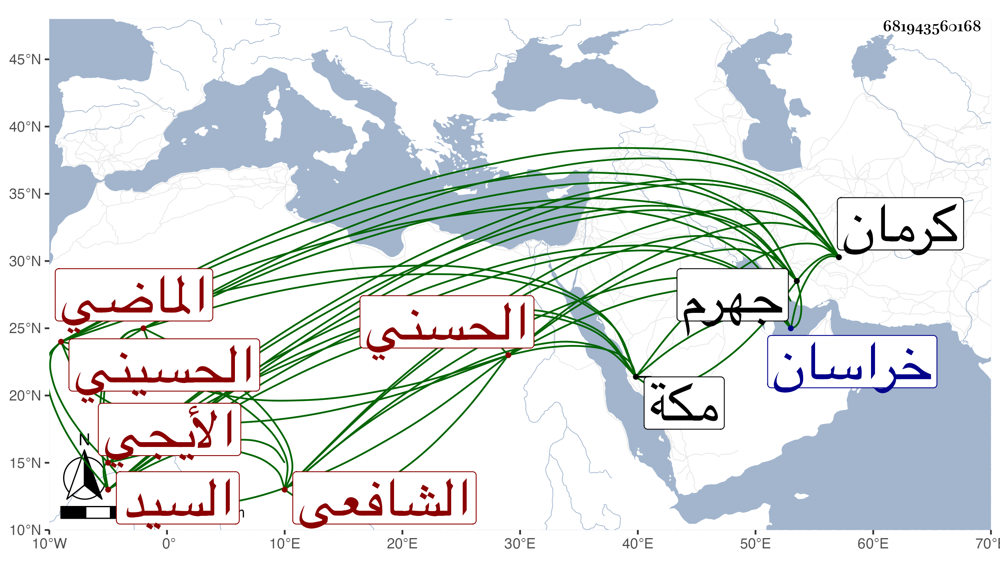

0902Sakhawi.DawLamic.ITO20230111-ara1.EIS1600.681943560168
Biography ID: 681943560168
17
محمد بن عبد الرحمن بن محمد بن عبد الله بن محمد بن الله السيد معين الدين ابن السيد صفي الدين الحسني الحسيني الأيجي الشافعي الماضي أبوه وأخوه أحمد ويعرف بلقبه . ولد في جمادى الأولى يوم الجمعة ثامن عشريه وبخطي أيضا ثامن عشره وهو فيما قيل أشبه سنة اثنتين وثلاثين وثمانمائة بايج ولازم والده في الفقه والعربية والصرف والأصلين وغيرها ، وابن عمه القطب عيسى في المعاني والبيان ثم ارتحل إلى كرمان فقرأ على المولى على أحد تلامذة السيد الجرجاني حاشية شرح المطالع لشيخه . ثم إلى خراسان فأخذها أيضا عن المولى خواجا على أحد العظماء من تلامذة السيد أيضا بحيث قال فيه شيخه السيد : لو اجتمع في أحد ذهنه وجدي في العلم وتقرير ولدي محمد لغلب العالم ، وأخذ شرح المواقف عن المولى محمد الجاجرمي وقدمه خواجا علي للتدريس بحضرته وكذا أذن له غيره فتصدى لذلك وللإفتاء ببلده ، وقطن مكة أكثر من عشر سنين متوالية أولها سنة سبع وستين على طريقة جميلة إقراء وتصنيفا وتقللا من الخوض فيما لا يفيد ، وانتفع به جماعة وعمل تفسيرا في مجلد ضخم وشرحا لأربعي النووي في مجلد لطيف ورسالة في تفضيل البشر على الملك وأخرى في تفسير الكوثر وأخرى في الحيض وأخرى في قوله صلى الله عليه وسلم : اللهم أنت ربي لا إله إلا أنت خلقتني وأنا عبدك إلى غيرها . وأجاز له ولحفيد عمه ابن أخته السيد عبيد الله جماعة منهم زينب ابنة اليافعي وأبو الفتح المراغي والمحب المطري والتقي بن فهد ومحمد بن علي الصالحي المكي والشمس محمد بن محمد بن عمر بن الأعسر ، ولقيته غير مرة في المجاورة الثانية ثم قدم في أيام الثمان من المجاورة الثالثة عابر سبيل ورجع فأقام ببار ثم انتقل إلى جهرم متوجها للإقراء والإفادة ونعم الرجل أصلا ووصفا .
